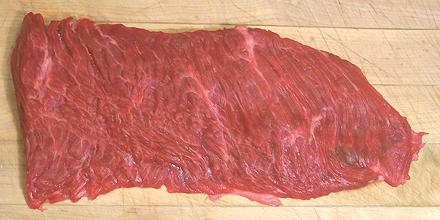

Beef Flap Meat

[Flap Steak, Ranchera]
This cut is little known in much of the U.S. but is common in California
because it's excellent for Fajitas and other Mexican dishes that use beef
cut into narrow strips and also for Southeast Asian and Chinese stir fry
dishes which also use narrow strips. Because it's already thin it needs
less cutting than other cuts. The photo specimen was 10 inches by 5
inches and 3/4 inch at the thickest point, but most of it was thinner.
Weight was 13-1/4 ounces.
Flap meat is cut from the flank at the bottom of the sirloin section
of the cow. Unlike Flank Steak, which is ultra lean, Flap meat has a
loose, grainy, marinade absorbent texture with enough fat and connective
tissue to keep it moist, provided it is not overcooked.
More on Cuts of Beef.
Prep:
This cut should be sliced thin, and always
across the grain or it will be stringy. Flap meat takes marinading very
well. There is a thin membrane covering or partially covering the back
side. It can be left on for some applications and removed for others. It
will shrink a bit in cooking, curling the strips if not removed.
Cooking:
Flap meat should be minimally cooked by methods
quick and hot. Braising and any other method that fully cooks the meat
should be avoided as it will become tough and dry. A quick stir frying
over hot flame is fine.
ab_flapz 071021 - www.clovegarden.com
©Andrew Grygus - agryg@clovegarden.com - Photos
on this page not otherwise credited © cg1
- Linking to and non-commercial use of this page permitted